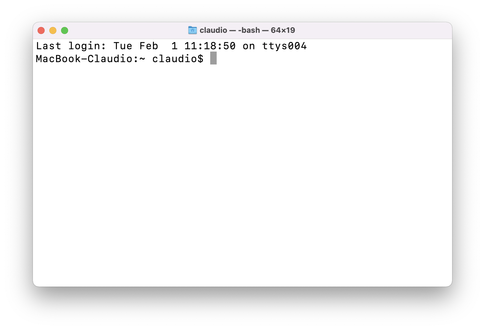
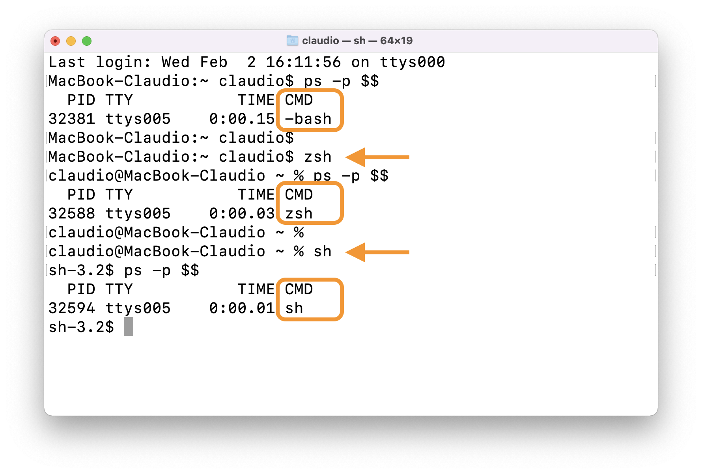
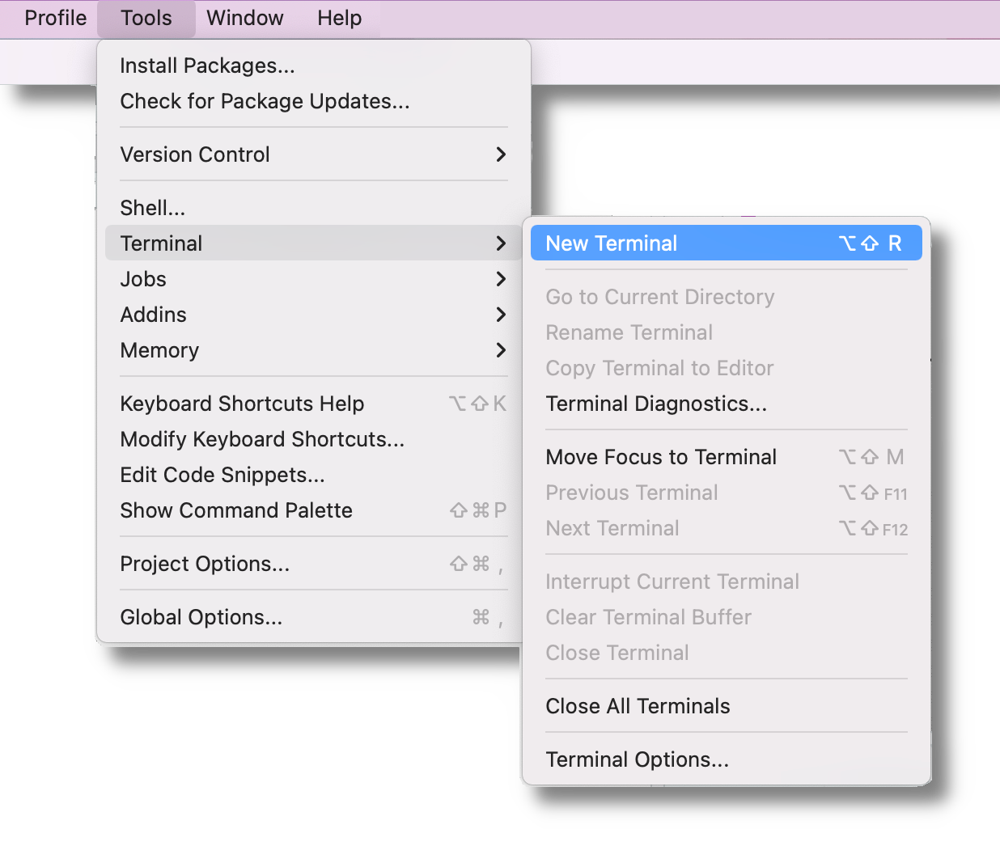
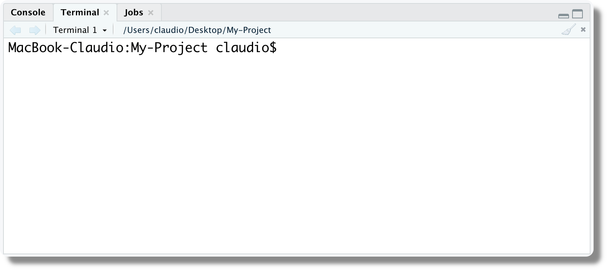
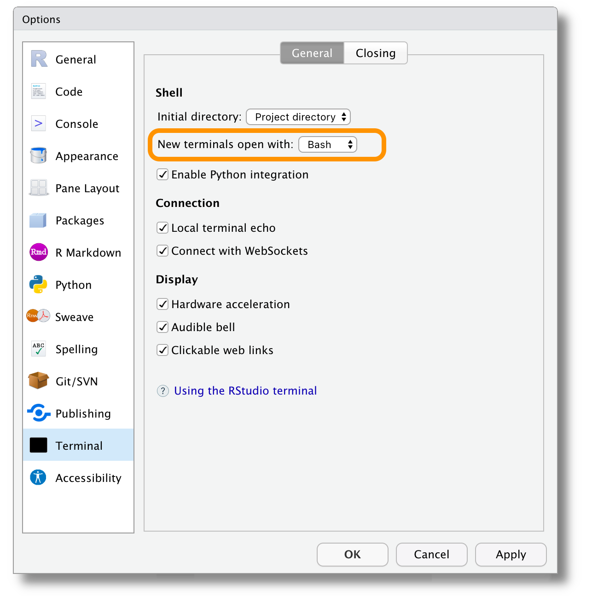

Chapter 6 Terminal
In the era of the metaverse, User Experience Design, and beautiful Graphic User Interfaces, the terminal with its text-based command-line interface looks like a prehistoric tool from some old 80s sci-fi film.

We may wonder why we still need such an old school tool? Well, the terminal is a very powerful tool. By using the terminal we can easily manage our files and execute complex operations very efficiently. Moreover, although most software provides some graphical user interfaces, advanced functionalities may only be available through the command-line interface. The bottom line is, “when the going gets tough the terminal gets opening”.
Therefore, although it may seem overwhelming at first, we need to learn the basics of the terminal to later use more advanced tools that are introduced in the following Chapters. In particular, the terminal is required to use Git (see Chapter 7) and Docker (see Chapter 12).
In this chapter, we provide a minimal guide to the terminal introducing the main concepts and basic commands to manage and manipulate files. In particular, we refer to the Bash command language used on Unix systems (see Section 6.1.1).
This is just a minimal introduction to familiarise less-experienced users with the terminal. A complete overview of the terminal is beyond the aims of this chapter. However, we encourage everyone to spend more time learning how to properly work with the terminal and the Bash command language. This will help a lot to improve our skills as a programmer. We highly recommend these two tutorials (please, read them!):
- Terminal Tutorial https://ryanstutorials.net/linuxtutorial/
- Bash Scripting Tutorial https://ryanstutorials.net/bash-scripting-tutorial/
Remember that the terminal is a very powerful tool and\(\ldots\) “with great power comes great responsibility”. The terminal allows us to access important files and settings on which our machine relies on.
Fortunately, most fundamental stuff requires admin permissions, but still, we can easily mess up things on our machine and some actions may not be reversible. Therefore, any time we use the terminal we should be very careful about the commands we run and aware of the possible consequences
A good tip is to always keep some up-to-date backups of our machine, just in case we mess things up.
6.1 What is a Terminal?
The terms command-line, terminal, and shell are often used interchangeably to refer to the same thing: “using text-based commands to interact with the operating system”.
To be precise, however, they are not exactly the same thing. Let’s define them:
Command Line Interface (CLI). A CLI is a text-based interface that allows users to interact with a program by typing command lines. The program executes the command and possible responses are returned in a text-based format. For example, both Python and R can be used through CLI. On the other hand, a Graphical User Interface (GUI) is a point-and-click interface that allows users to interact with a program through menus, icons and buttons. Both have pros and cons, so they are used according to the different needs. In particular, CLIs are very efficient to automate tasks by using scripts. For more details, see https://www.computerhope.com/issues/ch000619.htm.
Terminal (or Console). The graphical window with a command-line interface allows us to interact with the shell.
Shell. The command line interpreter that processes the commands, communicates with the Operating System and returns the results.
For more details, see https://www.geeksforgeeks.org/difference-between-terminal-console-shell-and-command-line/.
Although these subtle differences, also in this book the terms command line, terminal, and shell are used interchangeably. Thus, for example, when we say “using the terminal” we mean “typing commands processed by a shell command-line interpreter in a terminal window”.
6.1.1 Different Shells
Different shell command line interpreters are available depending on the Operating System. The most popular shells are reported in Table 6.1. For more details about the different shells, see https://www.servertribe.com/difference-between-cmd-vs-powershell-vs-bash.
| Shell Interpreter |
|---|
| Windows |
| Command Prompt (CMD) |
| PowerShell |
| \(\ldots\) |
| Unix System (macOS and Linux) |
| sh (Bourne shell) |
| Bash (Bourne again shell) |
| Zsh (Z shell) |
| \(\ldots\) |
We can install multiple shells on the same machine. When we open the terminal, the default shell is automatically used. We can change the terminal default shell by changing the system settings. Alternatively, we can simply change the shell in the current session by typing the desired shell name. For example, ignoring all the jargon that will be explained in Section 6.3, you can see how starting from the default shell bash, we can use the commands zsh and sh to change the current shell (arrows indicate the commands and the current shell is indicated in the rectangles).

Although most shells work similarly, each one has its unique commands and specific features. In particular, Unix shells and Windows shells are based on very different frameworks leading to important differences. Learning one of the two would give us only a limited intuition of how the other works. For an example of command differences, see https://www.geeksforgeeks.org/linux-vs-windows-commands/. Therefore, we need to choose which shell command language to learn first.
We decided to use Bash for two main reasons. First, Bash is now available on all main Operating Systems (macOS, Linux, and Windows). In fact, Windows recently introduced the Windows Subsystem for Linux (WLS) that allows us to run Linux directly on Windows meaning that we can use any Unix based shell (see Section 6.2.1). Second, Bash is one of the most diffused and supported shell command languages and it is the default shell in most Linux distributions. As most web servers and online services are Linux-based, learning Bash would allow us to easily work with all these advanced tools (e.g., Docker).
Bash language and other shell languages, in general, are referred to as command languages rather than programming languages. Why this difference?
Shell languages are considered super-languages used to communicate with the Operating System. They are intended to interact with everything and execute any task by managing calls to other programs. This is their real power, the possibility to create complex applications using different programs.
Hypothetically, shell languages can be used on their own to implement any arbitrary algorithm. However, they usually lack features to facilitate this job. You would need to implement everything yourself or relay to call some other external program.
For more detail, see https://stackoverflow.com/questions/28693737/is-bash-a-programming-language.
6.2 Install Bash
Let’s see how to install Bash depending on the Operating System.
6.2.1 On Windows
With the introduction of the Windows Subsystem for Linux (WLS) (now at its second version), Windows supports Linux natively. This means we can now install Linux distributions directly on Windows allowing us to use any Unix based shell. See official documentation at https://docs.microsoft.com/en-us/windows/wsl/about.
The WLS install procedure depends on your Windows version. Check your Windows version following instructions at https://support.microsoft.com/en-us/windows/which-version-of-windows-operating-system-am-i-running-628bec99-476a-2c13-5296-9dd081cdd808.
- Command-Line Procedure, for Windows 10 version 2004 or higher (Build 19041 and higher) or Windows 11 follow instructions at https://docs.microsoft.com/en-us/windows/wsl/install.
- Manual Procedure, for older builds of Windows follow instructions at https://docs.microsoft.com/en-us/windows/wsl/install-manual.
The instructions will guide you through the installation of WLS (version 1 or 2 depending on your Windows version) with a specific Linux distribution. If you follow the manual procedure, choose Ubuntu as the Linux distribution (this is already the default in the command line install procedure).
Done?\(\ldots\) Congrats! You have just installed Linux on a Windows machine. Now we can launch a Bash terminal session simply by opening Ubuntu as we would do with any other application. Note that we can also start the Bash shell from other terminals by simply typing bash.
Now let’s briefly clarify a few important things without going into details. We have installed both Windows and Linux on our machine but they actually “live” in two different places. They can communicate with each other, but we have to be careful about what we do. Windows and Linux are completely different Operating Systems and they manage files differently (they use different files metadata). Therefore, if we modify Linux files from Windows, this could result in corrupted or damaged files. Fortunately, there is a safe way to do that:
- Accessing Linux file system from Windows safely via
\\wsl$\<DistroName>\(e.g.\\wsl$\Ubuntu\home\<username>\<folder>)
Note that the reverse process is not a problem, we can access Windows files from Linux without issues. To do that:
- Accessing Windows file system from Linux via
/mnt/<drive>/<path>(e.g./mnt/c/Users/<username>/Desktop)
For more details, see https://devblogs.microsoft.com/commandline/do-not-change-linux-files-using-windows-apps-and-tools/ and https://devblogs.microsoft.com/commandline/whats-new-for-wsl-in-windows-10-version-1903/.
The most common shells on Windows are Command Prompt (CMD) and PowerShell. These are installed in Windows by default and they come with their own dedicated terminal application. By opening one of the two terminal applications, a new terminal window is opened with the specific shell interpreter.
Admin
Occasionally we may need to open the terminal with administrator privileges. This means opening the terminal with permission to make major changes to the system. To do that we need to right-click on the specific terminal application and select “Run as administrator”.
Windows Terminal
Windows recently introduced Windows Terminal, a modern terminal application for using shells like Command Prompt, PowerShell, and Windows Subsystem for Linux (WSL). Windows Terminal has many features and custom settings to facilitate our work (see https://docs.microsoft.com/en-us/windows/terminal/).
We highly recommend using Windows Terminal as your terminal. To install Windows Terminal and specify default shell settings, see https://docs.microsoft.com/en-us/windows/terminal/install.
6.2.2 On macOS
In macOS, the Bash shell is already installed. From macOS 10.15 Catalina, however, the default shell for new users will be Zsh. Zsh behaves very similarly to Bash so both are fine. Nevertheless, if you want to use the Bash shell, simply run the command bash in the terminal.
To find the Terminal app, press command + space and type Terminal in the search field. Alternatively, we can find the Terminal app with Finder in the Applications/Utilities folder. See https://support.apple.com/en-in/guide/terminal/apd5265185d-f365-44cb-8b09-71a064a42125/mac.
Once the Terminal is open, run the following command xcode-select —install. This will install different tools that are useful when working with the Terminal (e.g., git). For more details, see https://www.freecodecamp.org/news/install-xcode-command-line-tools/.
Brew is a free and open-source package manager that allows us to easily install software and applications (it is the corresponding of apt in Linux distributions). The advantages of using Brew are that all the dependencies and environmental settings are automatically managed, saving us from lots of troubles. Moreover, using Brew we can safely update or remove software and applications with a single command. We highly encourage you to start using Brew to install all software and applications.
To install Brew, follow the instructions at https://mac.install.guide/homebrew/3.html. Note that for macOS versions older than Catalina, instructions are slightly different. In particular, the command to run for older versions is
/usr/bin/ruby -e "$(curl -fsSL https://raw.githubusercontent.com/Homebrew/install/master/install)"Moreover, on Apple Silicon machines depending on your default Shell (Zsh or Bash), you are required to edit different profile files (.zprofile or .bash_profile).
Default Shell: Zsh vs Bash
With macOS 10.15 Catalina, the default shell on macOS changed from Bash to Zsh. We could think that this is due to some improved features of Zsh over Bash. This is partially true, but there is also another part of the story.
The available version of Bash on macOS is 3.2 from 2007 while the currently available version is 5.1. Why is there this big difference? Well, 3.2 was the last release under GPLv2 whereas subsequent releases moved to the GPLv3 which is incompatible with Apple’s policies. For more details, see https://scriptingosx.com/2019/06/moving-to-zsh/.
We can install the updated version of Bash using Brew and set the default shell according to our preference. To do that follow instructions at https://itnext.io/upgrading-bash-on-macos-7138bd1066ba. Note that depending on the CPU (Intel vs ARM) the path would be different (/usr/local/bin/<shell-name> vs /opt/homebrew/bin/<shell-name>; see https://apple.stackexchange.com/a/434278/356551).
6.3 Get Started
Now that we all have bash (or another shell) installed, let’s run our first commands. Here we only explain how to move between directories and execute simple file manipulations. For complete tutorials, we highly recommend:
- Terminal Tutorial https://ryanstutorials.net/linuxtutorial/
- Bash Scripting Tutorial https://ryanstutorials.net/bash-scripting-tutorial/
6.3.1 Prompt and Commands
When we open the Terminal, a similar short text message will appear at the start of the command line.
This is the “prompt” indicating that the system is ready for the next command. The prompt displays some information depending on the actual shell used and the specific settings. In this case, we have:
HOST_NAME:CURRENT_DIRECTORY USER_NAME$To run a command, we simply type the desired command and then we press Enter. Commands usually have the following structure:
Command [Options] Argument1 Argument2 ...Commandis the specific command name.Optionsare used to obtain some command specific behaviour. Options are optional (in Bash documentation this is usually indicated by square brackets “[ ]”). Options usually are single letters preceded by a single dash “-” (e.g.,-aor-l) or they can be words preceded by a double-dash “--” (e.g.,--allor--recursive). Sometimes, options have both forms, the single letter and the single word (e.g.,--directoryis the same as-d). Although the single word is more readable, the single letter form is usually preferred as less verbose and it is possible to concatenate multiple options (e.g.,-adstands for-a -dor--all --directory). Note that options are also called “flags” (in reality there is a subtle difference, an option can itself take an argument whereas a flag does not).Argument*are the command specific arguments. Arguments are separated by space, if an argument is formed by multiple words we need to wrap it inside quotes (e.g.,my argumentis considered as two separate arguments,"my argument"is considered as a single argument). Note that we don’t always need to specify all the command arguments as some arguments may have default values and others may be optional.
For example, in the command ls -la Desktop/my-project, ls is the specific command, -la are two options, and Desktop/my-project is the command argument.
Bash has many implemented commands. However, we may need other software to execute some specific operations. To do that we simply specify the required software followed by the desired command and its options and argument
Software Command [Options] Argument1 Argument2 ...For example, in the command docker build -t my-image:1.0.0 Desktop/my-project, docker is the software (see Chapter 12), build is the specific command, -t my-image:1.0.0 is an option, and Desktop/my-project is the command argument.
As we already have pointed out, command arguments are separated by spaces. This is particularly relevant in the case of paths. If file or directory names include spaces, we need to use quotes.
As discussed in Chapter 3.1.2, a good tip is to avoid spaces in file or directory names. We can use the single dash (“-”) or underscore (“_”) character to concatenate multiple words.
Another tip is to avoid special characters (e.g., accented characters or other symbols) they only create trouble.
6.3.3 Modifying Files
We learned the basics of how to move ourselves inside the machine directory structure. Let’s see now how we can manipulate files.
To create a new directory, use the command mkdir (make directory) specifying the name (and position). We create the directory my-project and we move inside it.
$ mkdir my-project
$ cd my-project
$ pwd
/Users/myname/my-projectTo create a blank file, use the command touch specifying the name (and position). Note that this command can also be used to create hidden files (i.e., files that start with a dot character). We create the file README.
$ touch README
$ ls
READMEWe can check the file content using the command cat (concatenate; print file content on the screen) or less (visualize the file on the screen allowing to move up and down the page; to quit press q). The file is now empty so if we check its content nothing appears.
$ cat README
$To add text to the file we can use a text editor (see Section 6.3.4). Alternatively, we can use the command echo. By default echo prints the desired message on screen, but using the syntax echo "message" >> file we can specify to add the message at the end of the desired file (Wow! Isn’t this magic?!?).
$ echo "Hello World!"
Hello World!
$ echo "Hello World!" >> READMENow we can check the file content again using cat.
$ cat README
Hello World!To move a file or a directory, use the command mv (move) specifying the source location and the destination. Let’s move the file Report.pdf from the Desktop to the my-project directory.
$ mv ../Report.pdf .
$ ls
README Report.pdfNote that . is used to indicate here (the current location). The command mv can also be used to rename files and directories by specifying as destination the same initial directory, but with a different name.
To copy a file, use the command cp (copy) specifying the source location and the destination. Note that to copy a directory the option -r, which stands for recursive, is required. Let’s create a copy of Report.pdf named Report-copy.pdf.
$ cp Report.pdf Report-copy.pdf
$ ls
README Report-copy.pdf Report.pdfFinally to remove a file, use the command rm (or rmdir to remove a directory) specifying the file.
$ rm Report-copy.pdf
$ ls
README Report.pdfSo far we described how to do simple operations using the terminal. We may wonder why we should bother with all this fuss when we could easily do the same operations using the common point-and-click interface? Well, this may be true if we need to do a single operation a single time, but where the Terminal shines is automation. If we need to repeat the same operation over multiple files or periodically over time, a few command lines would save us a lot of hours wasted in point-and-click menus.
Hopefully, this brief introduction has shed some light on the potential and utility of using the terminal and made you interested in learning more (or at least less afraid).
For complete tutorials, we highly recommend (if we do it for the third time there is a reason):
- Terminal Tutorial https://ryanstutorials.net/linuxtutorial/
- Bash Scripting Tutorial https://ryanstutorials.net/bash-scripting-tutorial/
If something goes wrong and the session stays idle press Ctrl + Shift + C (or Control + C on macOS) to interrupt the session. Sometimes (e.g., when using the command top or less) you only need to press q to go back to the interactive session.
If nothing seems responsive, well probably we ended up in vim or nano (two text editors: see Section 6.3.4), do not panic. To quit from vim type :wq end press Enter. To quit from nano press Ctrl + X (or Control + X on Mac).
Here is a summary of all the Bash commands introduced so far.
#---- Navigating ----#
pwd # Print working directory
cd <directory> # Change directory
ls <directory> # List files
-l # Long list with details
-a # List also hidden files and directories
-h # Return file size in readable units
#---- Modifying ----#
mkdir <directory> # Create directory
touch <file> # Create file
mv <source><dest> # Move (or rename) file or directory
cp <source><dest> # Copy file
-r # For directories
rm <file> # Remove file
rmdir <directory> # Remove directory
#----- Other -----#
echo <message> # Print message in console
cat <file> # Print file in console
less <file> # Open file in a screen6.3.4 Text Editors
Working with the Terminal, we realize that we can execute most tasks just using a few plain text files and a bunch of command lines.
To edit plain text files, we can use our preferred IDE (e.g., Visual-Studio-Code or RStudio) or other simple editors available in our OS (e.g., Notepad on Windows or TextEdit on macOS).
Alternatively, some text editors work directly from within the terminal. Two popular editors are:
nanoa simple editor. For a tutorial see https://www.howtogeek.com/howto/42980/the-beginners-guide-to-nano-the-linux-command-line-text-editor/.vi(or its improved versionvim) is the most powerful editor. For a tutorial see https://ryanstutorials.net/linuxtutorial/vi.php.
These editors are quite different from any other common editor. They are powerful but to properly use them we need to know lots of commands and keyboard shortcuts. The learning process can be quite challenging (not to say frustrating). Even being able to close them can be considered a great achievement. Consider this funny (but not too unrealistic) quote about vim:
I’ve been using vim for about 2 years now, mostly because I can’t figure out how to exit it. (source)
Just in case you went down the rabbit hole:
- To quit from
nanopressCtrl + X(orControl + Xon Mac) - To quit from
vimtype:w(or:wqto save and exit) end pressEnter.
6.4 Terminal in RStudio
Most Integrated Development Environments (IDEs; e.g., RStudio or Visual Studio Code) provide a Terminal window from which we can interact with the system shell.
In RStudio, we can open a Terminal window selecting from Tools > Terminal > New Terminal.

The Terminal panel appears next to the Console panel.

We can select the default shell used (plus other custom settings) from the Terminal section in the Global Options.

For more details on the use of the Terminal in RStudio, see https://support.rstudio.com/hc/en-us/articles/115010737148-Using-the-RStudio-Terminal-in-the-RStudio-IDE.
Terminal Tutorials
- Terminal Tutorial
https://ryanstutorials.net/linuxtutorial/ - Bash Scripting Tutorial
https://ryanstutorials.net/bash-scripting-tutorial/
Terminal Elements
- Command line vs. GUI
https://www.computerhope.com/issues/ch000619.htm - Difference between Terminal, Console, Shell, and Command Line
https://www.geeksforgeeks.org/difference-between-terminal-console-shell-and-command-line/ - Difference Between CMD Vs Powershell Vs Bash
https://www.servertribe.com/difference-between-cmd-vs-powershell-vs-bash - Linux vs Windows Commands
https://www.geeksforgeeks.org/linux-vs-windows-commands/ - Programming Language vs Command Language
https://stackoverflow.com/questions/28693737/is-bash-a-programming-language.
Install Bash
Windows
- Windows Subsystem for Linux
https://docs.microsoft.com/en-us/windows/wsl/about - Do not change Linux files using Windows apps and tools
https://devblogs.microsoft.com/commandline/do-not-change-linux-files-using-windows-apps-and-tools/ - What’s new for WSL in Windows 10 version 1903?
https://devblogs.microsoft.com/commandline/whats-new-for-wsl-in-windows-10-version-1903/ - Windows Terminal
https://docs.microsoft.com/en-us/windows/terminal/
MacOS
- Open the Terminal
https://support.apple.com/en-in/guide/terminal/apd5265185d-f365-44cb-8b09-71a064a42125/mac - Install Xcode Command Line Tools
https://www.freecodecamp.org/news/install-xcode-command-line-tools/ - Homebrew
https://mac.install.guide/homebrew/3.html - Moving to zsh
https://scriptingosx.com/2019/06/moving-to-zsh/ - Upgrading Bash on macOS
https://itnext.io/upgrading-bash-on-macos-7138bd1066ba